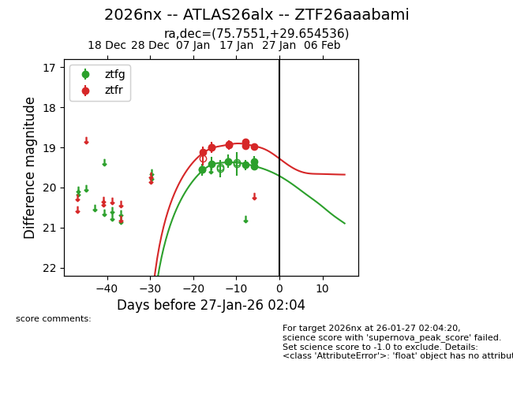
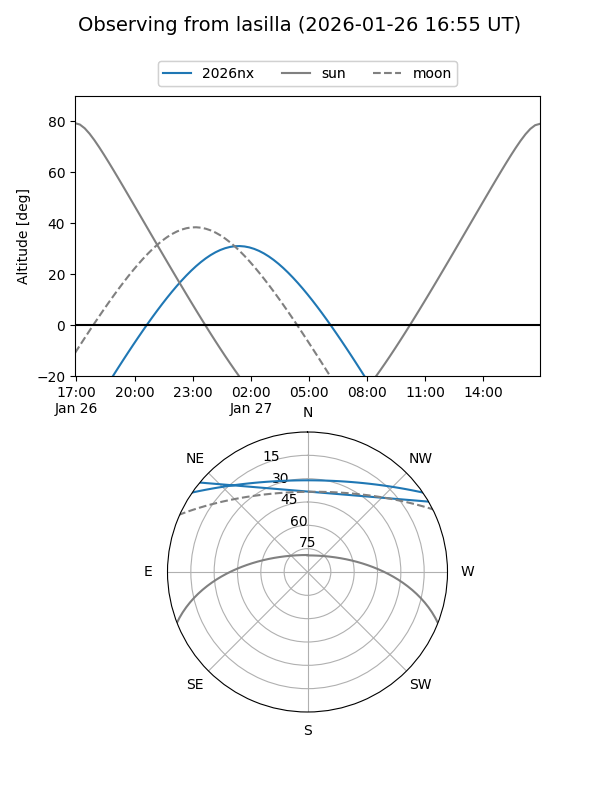
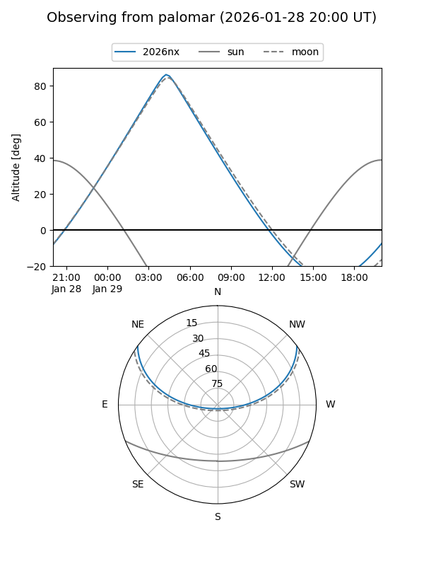
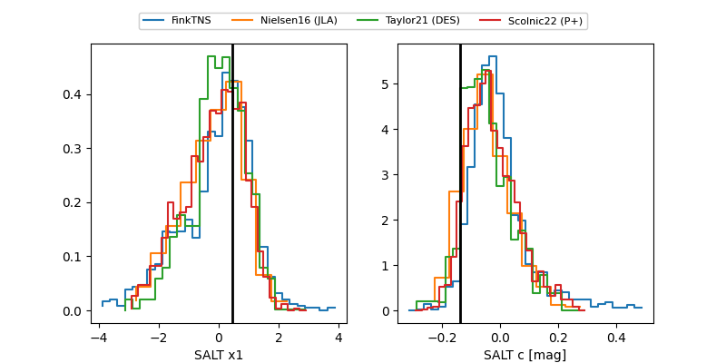

2026nx
Target 2026nx at 2026-01-26 16:11
Aliases and brokers:
FINK: link
Lasair: link
ALeRCE: link
TNS: link
YSE: link
alt names
ZTF26aaabami (ztf,fink_ztf)
2026nx (tns,yse)
ATLAS26alx (atlas)
Coordinates:
equatorial (ra, dec) = 75.7551,+29.65454
equatorial (HMS+DMS) = 05:03:01.22,+29:39:16.33
galactic (l, b) = (174.1814,-7.28322)
Flags:
Photometry:
last ztfg=19.36, ztfr=18.98
8 ztfg, 8 ztfr detections
Lightcurve

Visibility


Additional plots
